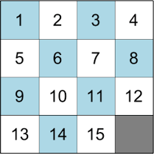
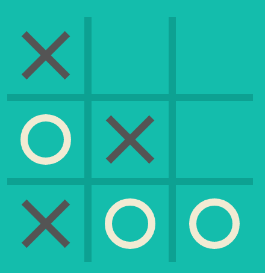

Welcome to Game Center
| N-Puzzle |
The n-puzzle is a classical problem for modelling algorithms
involving heuristics. Commonly used heuristics for this
problem include counting the number of misplaced tiles and
finding the sum of the taxicab distances between each block
and its position in the goal configuration.
The 15-puzzle (also called Gem Puzzle, Boss Puzzle, Game of Fifteen, Mystic Square and many others) is a sliding puzzle that consists of a frame of numbered square tiles in random order with one tile missing. The puzzle also exists in other sizes, particularly the smaller 8-puzzle. If the size is 3×3 tiles, the puzzle is called the 8-puzzle or 9-puzzle, and if 4×4 tiles, the puzzle is called the 15-puzzle or 16-puzzle named, respectively, for the number of tiles and the number of spaces. The object of the puzzle is to place the tiles in order by making sliding moves that use the empty space. wikipedia |
|  |
|
Tic-Tac-Toe (American English), noughts and crosses (British English), or Xs and Os is a
paper-and-pencil game for two players, X and O, who take turns marking the spaces in a 3×3 grid. The player who succeeds in placing three of their marks in a horizontal, vertical, or diagonal row is the winner.
The Tic Tac Toe is a great way to pass your free timewhether you're standing in a line or spending time with your kids. Stop wasting paper and savetrees. Because of the simplicity of Tic Tac Toe, it is often used as a pedagogical tool for teachingthe concepts of good sportsmanship and the branch of artificial intelligence. wikipedia |
Tic Tac Toe |
|  |